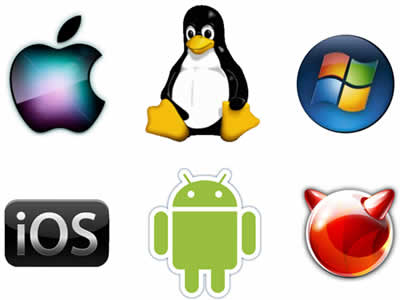

Sistema Operativo

O Sistema Operativo (S.O.) é um conjunto de programas/ferramentas que actuam como uma interface de utilizador entre o computador e as pessoas. Ele é responsável pela gestao de recursos e periféricos hardware, interpretação de mensagens e a execução de programas.
Um sistema Linux, é um Kernel mais um grupo de programas derivados do projecto GNU que compõem o Sistema Operativo. O kernel (que é a base principal de um sistema operativo) pode ser construído de acordo com a configuração do seu computador e dos periféricos que possuir.
Funcoes chave de um sistema operativo:
- O SO gere o acesso das aplicações ao processador e à memória do sistema
- Serve como um moderador de hardware para gerir como os programas usam o hardware do computador. O SO garante que um programa não tenta usar a memória que já está em uso por outro programa
- Usa um sistema de ficheiros para fornecer meios eficientes e confiáveis para guardar dados
- Gere as ligações com outros dispositivos
Projecto GNU
Em 1983, o programador americano Richard Stallman iniciou o projeto GNU(GNU's Not Unix) para criar um sistema operativo de código aberto que funcionasse do mesmo modo que o Unix. O Unix foi um sistema importante pois definiu conceitos técnicos usados em diversos sistemas operativos inspirados nele. Como a organização de pastas FHS(Filesystem Hierarchy Standard) ou a filosifia KISS(Keep it Simple, Stupid).
Sistema Operativo Unix
O Unix original foi desenvolvido em 1969 por um grupo de funcionarios do centro de pesquisas Bell Labs da empresa AT&T(empresa de telefones). Ken Thompson, Dennis Ritchie, Douglas McIlroy, e Joe Ossanna. Este sistema tinha as caracteristicas de ser multi-utilizador, multi-tarefa e funcionar em rede. Muitos outros sistemas operativos seguiram os conceitos do Unix. O projeto GNU é uma dessas variantes do Unix original, porem com a caracteristica de ser desenvolvido em Código Aberto.
Código Aberto/Open-Source
É o software que disponibilza o seu código fonte e devidamente licenciado com uma licença de código aberto no qual o direito autoral fornece o direito de estudar, modificar e distribuir o software de graça para qualquer utilizador ou para qualquer finalidade. Software de código aberto é muitas vezes desenvolvido de maneira colaborativa.
O movimento do Código Aberto visa promover o seguinte:
- Acesso universal ao codigo fonte, por uma licenca livre
- Redistribuição universal do projeto, permite partilhar copias de versoes melhoradas do projecto
A partir da década de 1990, o projeto GNU – equipado com o kernel Linux – deu origem a outros sistemas operativos de código aberto, cada um organizado e desenvolvendo novos programas mas escritos de maneira diferente com funções identicas.
Esses sistemas operativos são chamados por "distribuições do GNU/Linux".
Kernel/Núcleo
O sistema operativo do GNU/Linux é chamado de Linux (tecnicamente a palavra Linux apenas se refere ao kernel).
Todos os sistemas operativos necessitam de um kernel. Ele é o compomente de software responsável pela gestão de recursos de baixo nível tais como:
- Interface com dispositivos de hardware
- Gestão da memória para programas
- Gestão do tempo de processamento para programas
- Principal função de permitir que os programas interajam uns com os outros
- Outros programas são executados em cima do kernel
- O kernel é o software "cola" que segura e interliga o hardware com software tornando num conjunto
- Os kernels não são intercambiáveis: possuem diferentes designs internos, fornecem diferentes interfaces de software
Historia do Linux
Linus Trovalds estudante da finlandia desenvolve um kernel baseado no sistema MINIX. Um clone do Unix desenolvindo por Andrew S. Tanenbaum para que seus alunos pudessem ver o funcionamento interno de um sistema operativo. Era um sistema bastante minimal distribuindo com codigo fonte software e acompanhado com algum software freeware.
Naquela altura, existia apenas três sistemas operativos principais: DOS, Mac OS X e Unix.
O projecto linux surge no ano 1991 com a shell BASH e compilador GCC é considerado experimental e com convite a outros programadores para melhorar. Inicialmente apelidado de Freax(free + freak + x do uniX). Passado alguns meses após a partilha do ficheiro via ftp um amigo de Trovalds renomea o ficheiro freakx para linux.
Pontos fortes do Linux:
- muito utilizado em servidores para serviços
- altamente configuravel e personalizavel
- facil instalação em computadores desktop
- Vareadade em software para instalar
- Utiliza o hardware de forma inteligente, não exige muitos recursos
- windows, mac os e unix sao bons sistemas operativos mas estao protegidos por licensas restritivas de direitos de autor e copyright
GNU/Linux
Além de conter o kernel Linux e programas GNU, uma distribuição Linux(distro) normalmente agrega outros recursos para tornar sua utilização mais simples. Oferece um conjunto completo de programas prontos a usar, as distribuições mais populares podem atualizar e instalar novos programas automaticamente.
Esse recurso é o gestor de pacotes. O gestor de pacotes da distribuição elimina o risco de instalar um programa incompatıvel ou mal intencionado. O software pode ser instalado por pacotes em formato codigo fonte ou binario e são descarregados de Repositorios.
os gestores de pacotes mais utilizados sao: apt e yum
Gestor de Pacotes e Repositorios
Um gestor de pacotes permite instalar, actualizar, verificar e ate remover software. Facilita todo o processo de instalação pois guarda numa base de dados dependecias entre os pacotes instalado automaticamente o que esta em falta.
Não é obrigatorio instalar o software em formato binario ou por repositorio. É possivel compilar a partir do codigo fonte. Gerando ficheiros executaveis que so funcionam na maquina onde foi compilado com o gcc.